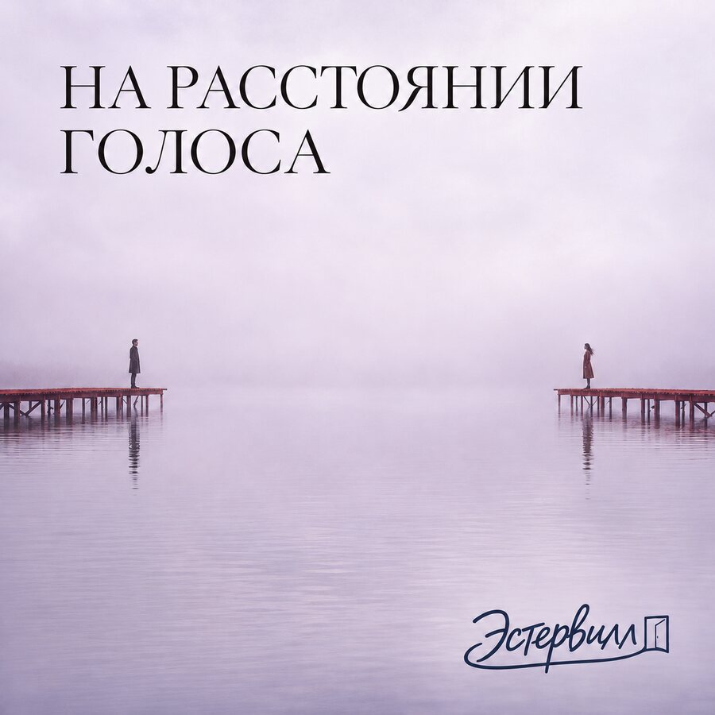

Альбом · 2026
На расстоянии голоса
- Музыка и слова
- Рома Спасский
- Аранжировка
- Дмитрий Недбаев
- Треков
У каждой песни — своя картина
Песни
Каждой песне альбома нарисована своя сцена из её текста. Нажмите на картину, чтобы услышать песню.
2020
Синглы
Первые релизы группы на площадках.
О группе
Песни о том, что люди бывают далеко, а голос ещё держит связь.
Эстервилл — группа Ромы Спасского: он пишет музыку и слова и поёт. Группа родом из Кирова, в 2000-х она выступала на фестивалях «Рок-Подъём» в Кирове и «СДВИГ» в Вологде.
В 2020 году вышли синглы «Ничья вина», «Вьются» и «Эзотерика». Новый альбом «На расстоянии голоса» группа собрала из песен, написанных за последние годы.